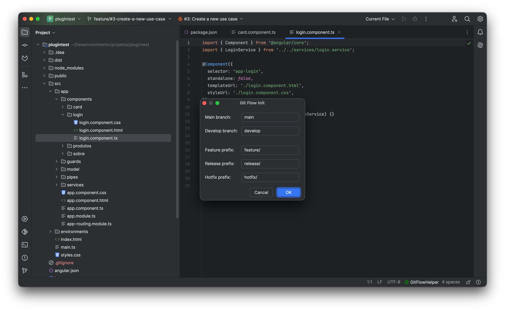
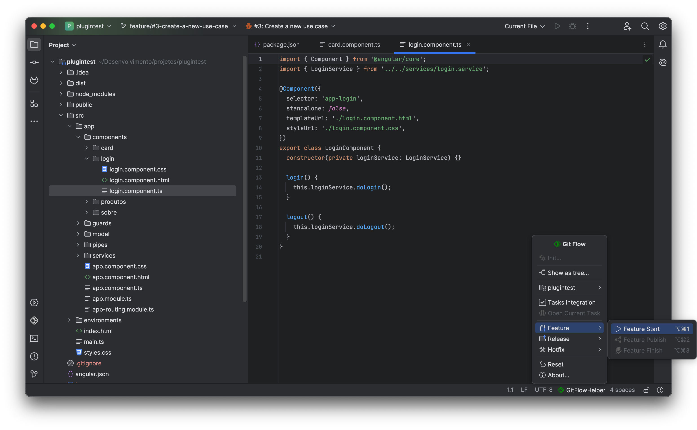
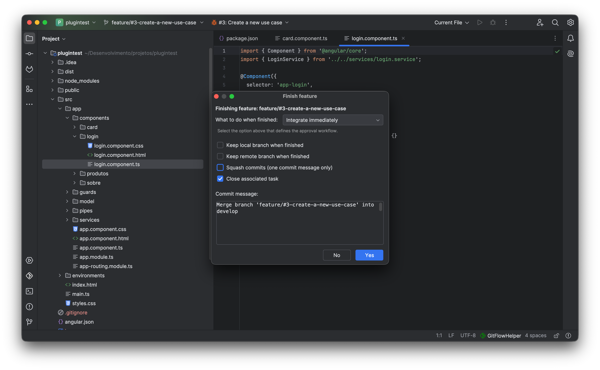

A clean, battle-tested implementation of Vincent Driessen's Git Flow model. Create, publish, synchronize, and finish branches without touching the terminal.
GitFlow Helper establishes strict separation of concerns between production stability and rapid feature development.
Represents official production releases. Every commit to main is tagged with a release version (e.g. v2.10.0). Developers never commit directly to main; code only arrives via completed releases or urgent hotfixes.
The central integration trunk for continuous development. Contains the latest tested features awaiting the next release cycle. All new features branch off develop and merge back into develop.
Isolated spaces where developers implement new user stories or enhancements. Branched off develop. GitFlow Helper can bind them directly to Jira, GitHub, GitLab, or Redmine tasks.
Releases: Forked from develop for final polish, QA bugfixes, and version bumping. Merges into both main and develop.
Hotfixes: Forked straight from main for production emergencies. Also merges to both branches with patch tag.

main, develop, feature/, release/, hotfix/, tag prefix) are configured.
From issue assignment to pull request approval, every step is streamlined.
Select Feature Start (or Ctrl+Alt+1). Optionally pick an assigned issue from Jira, GitHub, GitLab, or Redmine. GitFlow Helper automatically normalizes the ticket key and summary into a valid branch name (e.g. feature/PROJ-123-dark-mode) and transitions the issue status.
Share your progress with team members. Feature Publish (Ctrl+Alt+2) pushes the branch upstream to remote origin and sets tracking in a single background operation.
Complete your work with tailored options:
• Integrate Immediately (--no-ff or squash)
• Create GitLab MR via Git push options
• Self-Create PR on GitHub / Bitbucket
• Automatically closes linked issue tracker task!

Long-lived feature branches easily become stale. GitFlow Helper ensures you know the second your branch falls behind develop.
Whenever other team members merge code into develop, an interactive status badge appears automatically in your IDE status bar displaying ⬇ N (where N is the exact count of commits behind).
⬇ 4 badge and the 1-click sync tooltip action.
